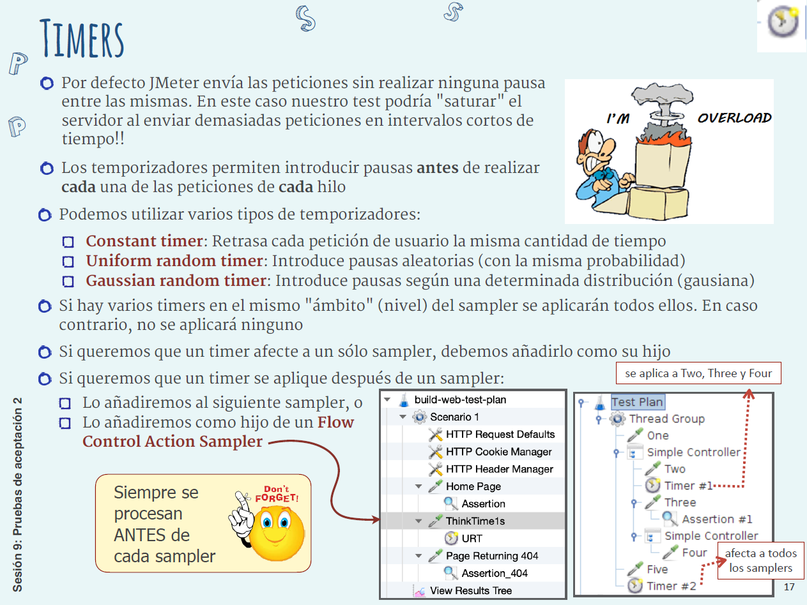
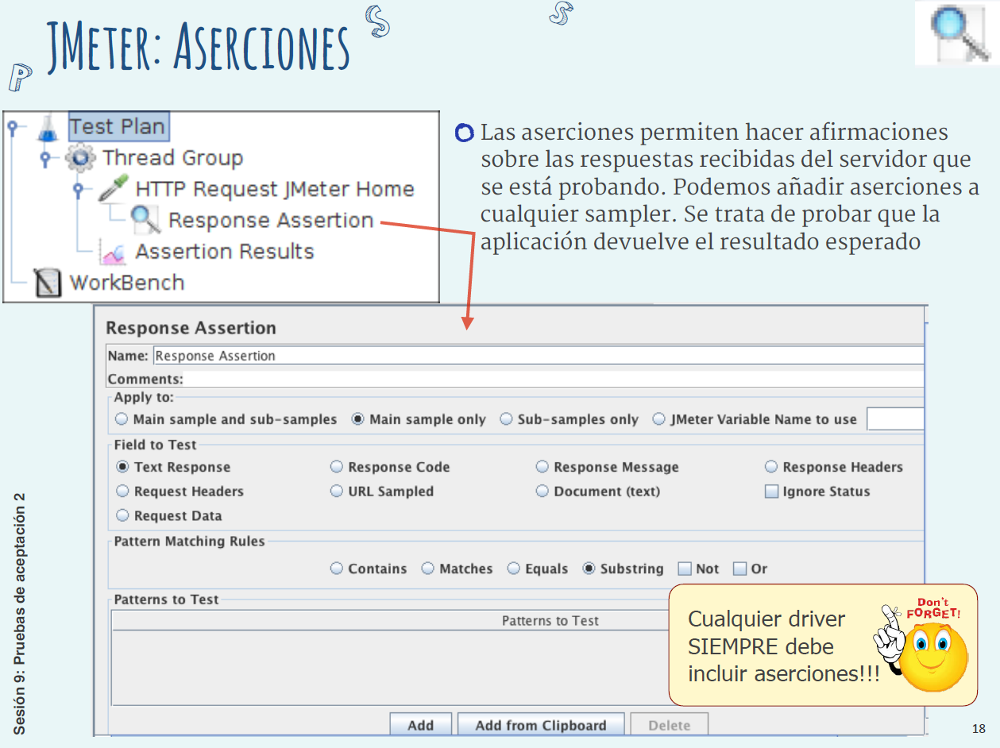
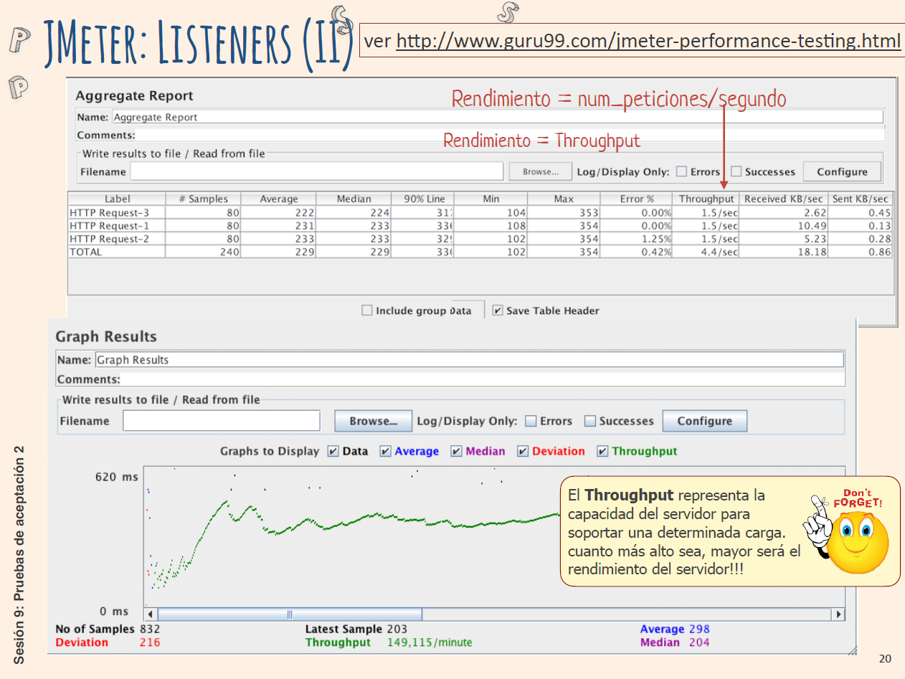

Resumen¶
- Propiedades emergentes no funcionales (fiabilidad, disponibilidad, mantenibilidad, escalabilidad, robustez) se validan en aceptación porque sólo tienen sentido sobre el sistema completo.
- Deben traducirse a criterios de aceptación medibles; se emplean métricas como MTTF, MTTR, MTBF (fiabilidad), MTTR (disponibilidad / mantenibilidad) y throughput o transacciones ∕ seg para escalabilidad.
- Pruebas de carga confirman el rendimiento dentro de los límites de diseño; pruebas de estrés superan dichos límites para evaluar robustez; pruebas estadísticas calculan fiabilidad a partir de un perfil operacional (probabilidad de cada clase de entrada).
- Proceso general de rendimiento:
- Identificar criterios y cuantificarlos.
- Diseñar los casos a partir del perfil operacional.
- Preparar un entorno realista.
- Automatizar (p.ej. JMeter) y ejecutar.
- Analizar resultados y refinar.
- JMeter automatiza pruebas de aceptación/presión:
- Plan = Test Plan + Thread Groups + Samplers.
- Cada hilo simula un usuario; el ramp-up reparte su creación.
- Samplers envían peticiones; su orden real se gobierna con Controladores lógicos.
- Timers introducen pausas; Assertions validan respuestas; Listeners recogen métricas (average, percentile 90, min/max, % error, throughput, KB/s).
- Las decisiones de arquitectura condicionan el rendimiento; por ello las pruebas no funcionales deben iniciarse en las primeras iteraciones y repetirse de forma continua.
S09 - Pruebas de aceptación 2¶
Contexto y objetivos¶
Las pruebas de aceptación se sitúan al final de la cadena unidad → integración → sistema → aceptación.
Propiedades emergentes no funcionales¶
| Propiedad | Descripción | Ejemplo de criterio |
|---|---|---|
| Fiabilidad | Probabilidad de funcionar sin fallos durante un periodo y entorno dados | ≥ 90 % en 24 h |
| Disponibilidad | Tiempo durante el cual el sistema presta servicio al usuario | 24/7 con MTTR ≤ 15 min |
| Mantenibilidad | Facilidad de aplicar cambios correctivos, adaptativos o perfectivos | MTTR de cambio < 4 h |
| Escalabilidad | Capacidad de mantener tiempos de respuesta al aumentar usuarios | 10 000 usuarios, ≤ 2 s |
| Robustez | Capacidad de recuperarse y seguir operando ante fallos | Sin caída con picos ×2 |
Estas propiedades sólo son evaluables sobre el sistema completo y constituyen la base de los criterios de aceptación no funcionales.
Métricas asociadas¶
- Los criterios de aceptación deben incluir propiedades emergentes "cuantificables".
| Métrica | Uso | Fórmula / unidad |
|---|---|---|
| MTTF (Mean Time To Failure) | Fiabilidad | Tiempo medio hasta fallo |
| MTTR (Mean Time To Repair) | Disponibilidad / mantenibilidad | Tiempo medio de reparación |
| MTBF (Mean Time Between Failures) | Fiabilidad global | MTTF + MTTR |
| Throughput | Rendimiento / escalabilidad | peticiones ÷ seg |
| Kb/s | Rendimiento de red | KB transferidos ÷ seg |
Evitar frases ambiguas como “tiempo razonable”: si no podemos medir, no podremos aceptar.
Tipos de pruebas para validar rendimiento¶
Pruebas de carga¶
Confirman que el sistema mantiene el tiempo de respuesta requerido bajo el volumen previsto de usuarios y transacciones. Ej.: “≤ 2 s con 10 000 usuarios concurrentes”.
Pruebas de estrés¶
Incrementan gradualmente la carga por encima del límite de diseño (p.ej. > 300 TPS) para observar el punto de fallo y la capacidad de recuperación. Valoran robustez.
Pruebas estadísticas¶
- Perfil operacional: clasificar entradas y asignarles probabilidad.
- Generación de datos según esa distribución (números aleatorios 1–99 → clase).
- Ejecución y medición de fallos/tiempo hasta fallo para estimar fiabilidad.
Perfil operacional (ejemplo)
Clase C1 → 50 % → RNG 1-49
Clase C2 → 15 % → RNG 50-64
...


Proceso de pruebas no funcionales¶
- Identificar criterios cuantificables (tiempos, tasas error, throughput…).
- Diseñar casos basados en escenarios reales de uso (perfil operacional).
- Preparar un entorno de pruebas representativo de producción.
- Automatizar y ejecutar con herramientas (JMeter, …).
- Analizar resultados y refinar arquitectura o configuración.
Las decisiones arquitectónicas influyen directamente en estas propiedades: no postergar las pruebas de rendimiento al final del proyecto.
Automatización con Apache JMeter¶
Elementos fundamentales¶
| Elemento | Rol | Icono JMeter |
|---|---|---|
| Test Plan | Raíz; agrupa todo el driver | 📄 |
| Thread Group | Define usuarios, ramp-up, bucle | 👥 |
| Sampler | Envía peticiones (HTTP, JDBC…) | 🌐 |
| Logic Controller | Altera orden / condicionales | 🔁 |
| Timer | Introduce pausas | ⏱ |
| Assertion | Comprueba la respuesta | ✅ |
| Listener | Registra y muestra resultados | 📊 |
Flujo de ejecución interno¶
- Se repite por hilo e iteración.
Configuration Elements
↓
Pre-Processors
↓
Timers
↓
Sampler
↓
Post-Processors
↓
Assertions
↓
Listeners
Configuración de un Thread Group¶
- Número de hilos = usuarios simulados.
- Ramp-up = segundos para levantar todos los hilos.
- Loop count = nº de repeticiones; “forever” para bucle infinito.
<!-- fragmento .jmx ilustrativo -->
<ThreadGroup num_threads="100" ramp_time="60" loops="10">
...
</ThreadGroup>

Samplers y Controladores¶
- HTTP Request sampler: URL, método, parámetros.
- Loop Controller: repite sus hijos n veces.
- Interleave Controller: ejecuta un hijo distinto en cada iteración (ej.: búsquedas “A”, “B”).


Timers comunes¶
| Timer | Uso |
|---|---|
| Constant Timer | Pausa fija entre peticiones |
| Uniform Random | Pausa aleatoria uniforme |
| Gaussian Random | Pausa con distribución gaussiana |
Para que un timer afecte a un solo sampler, añádelo como hijo; si está al mismo nivel, afectará a todos los samplers de la rama.

Assertions¶
Añadir al menos una aserción por sampler para verificar código HTTP, contenido esperado, tamaño de respuesta, etc.

Listeners y métricas¶
- Aggregate Report, Summary Report, Graph Results, Response-Time Graph…
- Datos por etiqueta de muestra: #Samples, Average, Median, 90 % Line, Min, Max, %Error, Throughput, KB/s.
- Throughput = peticiones / segundo (capacidad del servidor).

Buenas prácticas de rendimiento con JMeter¶
- Ejecutar JMeter desde otra máquina que no sea el SUT.
- Repetir los escenarios durante largos periodos para detectar degradación.
- Usar múltiples instancias JMeter para cargas extremas (modo distribuido).
- Basar los tests en casos de uso reales y perfil operacional.
- Controlar el entorno: ancho de banda, uso exclusivo del servidor, etc.